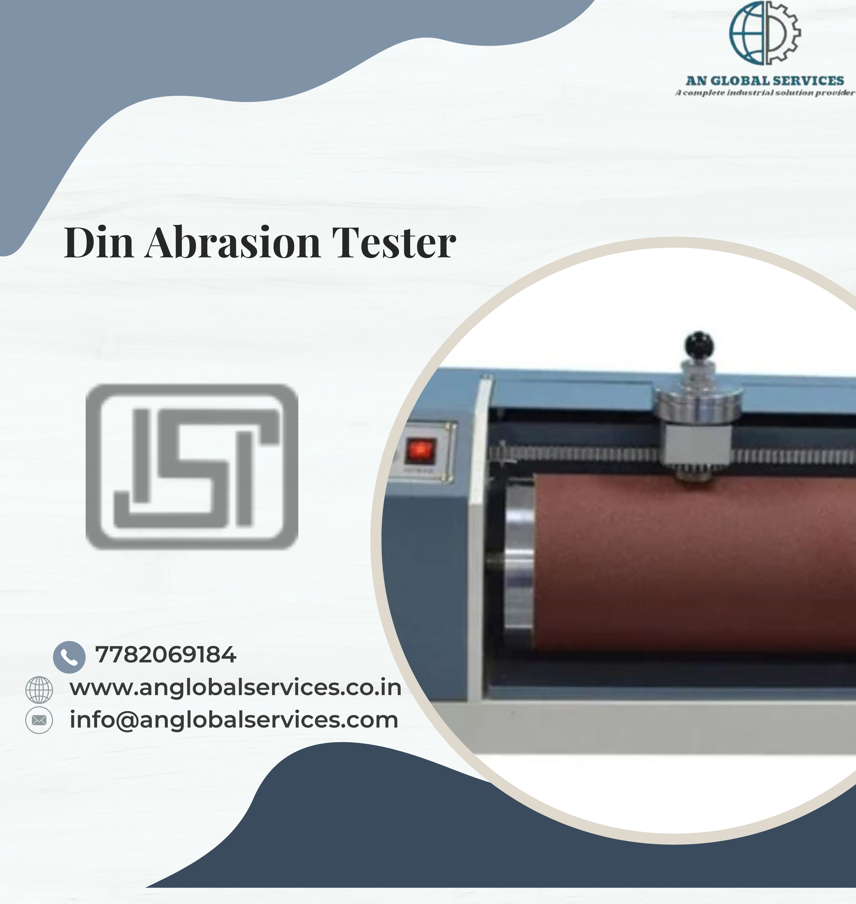

TESTING EQUIPMENTS FOR FOOTWEAR:-





The Department for Promotion of Industry and Internal Trade (DPIIT) officially unveiled that all shoemakers will need to obtain a BIS certificate, and all footwear must adhere to the relevant Indian Standard and exhibit the Standard Mark (ISI Mark) under a license from the Department. Without an ISI Mark, selling leather or other material-made footwear would be forbidden. Under this order, no manufacturer will be legally permitted to produce footwear without BIS certification. Failure to do so will result in criminal charges, including prison time and hefty fines.
If
a
foreign manufacturer wants to sell their shoes in India, they must first obtain a
BIS
certificate
for import in India through an Authorized Indian Representative appointment.
All
the
distributors/sellers are guided to import or sell only ISI mark footwear to ensure
consumers
safety
and trust.
As per (Quality Control) Order, of DPIIT, Ministry of Commerce and Industry, BIS certification is mandatory for Footwear made from Leather and other materials. These quality control norms for leather shoes and other compound footwear are going to be implemented to contain imports and the production of sub-standard products in India. This notice covers different leather footwear, counting anti-riot shoes and safety boots too.
The department has issued three quality control orders which are going to cover and lie made from rubber/polymeric material, leather and other materials and PPE footwear the mandatory certification of BIS.
The following three QCOs have been issued covering footwear made from rubber/polymeric material, leather and other materials and PPE footwear:
As per DPIIT's Quality Control Orders on Footwear Products, 27 footwear products have been brought under mandatory BIS certification. First of all, you must identify the Indian Standard for your product. Read the Indian Standard and ensure that your product meets the requirements specified in the Indian Standard and that your unit has the necessary manufacturing and testing facilities as specified in the Indian Standard. After that, you have to create login credentials on BIS Manakonline login portal to apply for BIS Licence for your footwear. There are two modes of application for BIS license: Normal procedure and simplified procedure.
The following are the Normal procedures for getting BIS certification for footwear:
| Step 1 | Documentation before submission of application |
| Step 2 | Submission of application with requisite documents to BIS |
| Step 3 | Scrutiny of application by BIS officials |
| Step 4 | Nomination of auditor for Audit by BIS |
| Step 5 | Audit of manufacturing premises by BIS auditor |
| Step 6 | Sample draw for independent testing |
| Step 7 | Sample testing in BIS approved laboratory |
| Step 8 | Grant of BIS license to footwear manufacturer |
The following essential documents are required for BIS Certification for footwear:
BIS certification for any product is a complex and time-consuming process that begins with product development and validation and continues through the BIS certification process.
At last, it is mandatory for footwear manufacturers and importers to obtain a BIS certificate/licence of footwear in order to use the standard ISI mark on footwear. Footwear without the ISI mark is not permitted to be sold in the country. Aleph India offers complete technical assistance for BIS certification for all types of footwear.
We, Aleph INDIA, have been serving the industry as a single-window operator for all product regulatory compliance. With our extensive knowledge and experience, we provide end-to-end professional guidance and assistance for BIS certification for footwear.
| Sr.No | PRODUCTS | INDIAN STaANDARD |
|---|---|---|
| 1. | Industrial and protective rubber knee and ankle boots | IS 5557: 2004 |
| 2. | All rubber gum boots and ankle boots | IS 5557 (Part 2): 2018 |
| 3. | Moulded solid rubber soles and heels | IS 5676: 1995 |
| 4. | Rubber microcellular sheets for soles and heels | IS 6664: 1992 |
| 5. | Solid PVC soles and heels | IS 6719: 1972 |
| 6. | PVC sandal | IS 6721: 1972 |
| 7. | Rubber Hawai Chappal | IS 10702: 2023 |
| 8. | Slipper, rubber | IS 11544: 1986 |
| 9. | Polyvinyl chloride(PVC) industrial boots | IS 12254: 1993 |
| 10. | Polyurethane sole, semirigid | IS 13893: 1994 |
| 11. | Unlined moulded rubber boots | IS 13995: 1995 |
| 12. | Moulded plastics footwear- Lined or Unlined polyurethane boots for general industrial use | IS 16645: 2018 |
| 13. | Footwear for men and women for municipal scavenging work | IS 16994: 2018 |
| 14. | Leather safety boots and shoes for miners | IS 1989 (Part 1): 1986 |
| 15. | Leather safety boots and shoes for heavy metal industries | IS 1989 (Part.2): 1986 |
| 16. | Canvas Shoes Rubber Sole | IS 3735: 1996 |
| 17. | Canvas Boots Rubber Sole | IS 3736: 1995 |
| 18. | Safety Rubber Canvas Boots for Miners | IS 3976: 2018 |
| 19. | Leather safety footwear having direct moulded rubber sole | IS 11226: 1993 |
| 20. | Leather safety footwear with direct moulded polyvinyl chloride (PVC) sole | IS 14544: 1998 |
| 21. | Sports footwear | IS 15844: 2010 |
| 22. | High ankle tactical boots with PU - Rubber sole | IS 17012: 2018 |
| 23. | Antiriot shoes | IS 17037: 2018 |
| 24. | Derby shoes | IS 17043: 2018 |
.png)

.jpeg)